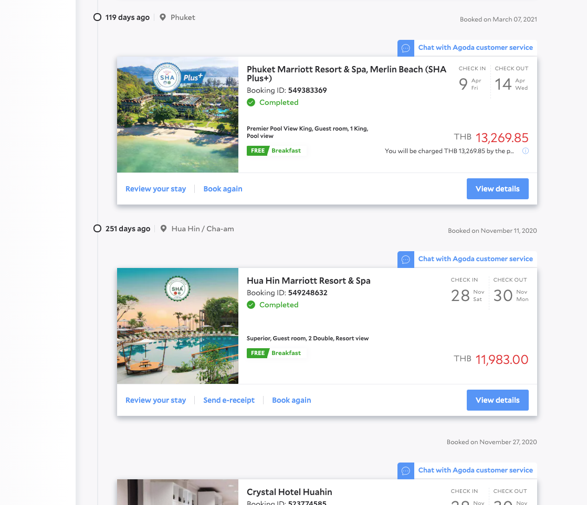

Post Booking Experience (Manage My Booking)
Short summary of the problem, your role, and the outcome. Replace this paragraph with your own one- to two-sentence project pitch.

Context
Describe the business and user context: who this was for, what was not working, and why the work mattered. Replace with your narrative.
Approach
How you framed the problem, who you partnered with, and how you moved from insight to solution. Add bullets or subsections as needed.
- Research or discovery highlight
- Design exploration or principle
- Validation or rollout note

Outcome
What shipped, what changed for users or the business, and what you learned. Use metrics only if you are allowed to share them.